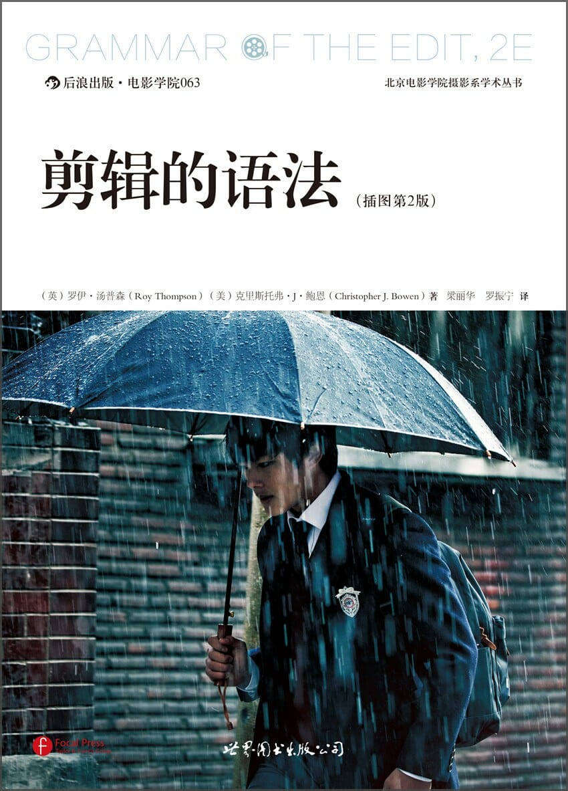

注：【】部分为笔者心得，非原文摘抄。
- 电影的剪辑是对电影拍摄中所捕获的影像和声音“镜头”进行整理、回看、筛选和顺片的过程。剪辑的结果就是一个连贯自然而充满意义的故事或是一种视觉呈现，并会尽量忠于影片的原意——娱乐、传达、启发等。
- 剪辑师剪切电影的时间以及不同镜头的衔接方式对观众所产生的影响往往会超越故事。
- 剪辑的四种基本方法：
- 切：一个镜头与下一个镜头之间的瞬时转换；
- 叠化：从一个镜头的结束画面逐渐转换到下一个镜头的开始画面；
- 划变：以特定角度行进的一条线或图形穿过屏幕，消除刚结束的镜头图像并显现出下一镜头的图像；
- 淡出淡入：上一组画面逐渐变成全黑屏幕（褪至全黑或淡出），下一组画面从全黑屏幕逐渐转为可见影像（黑色消退或淡入）。
- 叠化的场合：
- 时间变化；
- 地点变化；
- 时间需要延缓或者加速；
- 故事中出现情绪感染；
- 切出和切入画面之间存在强烈的视觉关联。
- 叠化配合慢动作（slow motion）画面时，可延缓时间的流逝。
- 划变的场合：
- 时间变化；
- 地点变化；
- 切出和切入的画面之间没有过多的视觉联系；
- 项目在转场处需要更多画面处理。
- 淡入/淡出用于以下情形：
- 节目开头/结尾；
- 章、场景、片段或幕的开头/结尾；
- 时间变化之处；
- 地点变化之处。
- 后期制作工作流程最基本的环节：
- 获取；
- 整理；
- 回看和筛选；
- 顺片（assemble edit）；
- 粗剪（rough cut）；
- 精剪（fine cut）；
- 图像锁定；
- 生成母版和交付。
- 对原素材的整理决定后期制作流程是顺利流畅还是缓慢困难。
- 基本镜头类型：
- 超特写（extreme close-up）；
- 大特写（big close-up）；
- 特写（close-up）；
- 中特写（medium close-up）；
- 中景（medium shot）；
- 中远景（medium long shot）；
- 远景（long shot/wide shot）；
- 大远景（very long shot）；
- 超大远景（extreme long shot）；
- 双人镜头（two shot）；
- 过肩镜头（over the shoulder）。
- 镜头拍摄的四个基本要素：
- 变焦镜头；
- 摄影机移动；
- 座架/支架；
- 拍摄对象。
- 镜头的基本类别：
- 简单镜头：镜头、摄影机、座架未移动，简单的拍摄对象移动；
- 复杂镜头：镜头、摄影机、无座架移动，简单的被摄对象移动；
- 运动镜头：镜头、摄影机、座架运动，更复杂的被摄对象运动。
- 焦点不准是最影响镜头效果的。
- 演员或被拍摄对象从一个镜头的画面走出，进入另一个镜头的画面，在此过程中银幕方向必须保持一致。
- 180° 规则由拍摄一个场景动作的第一个摄影机确定，此镜头通常是一个展示演员和环境的远景。
- 匹配角度（matching angles）即在拍摄每个人物时每个镜头类型中该人物的角度、在画面中的大小、面部的焦点要一直。
- 视线是一条假想线，连接人物的双眼与电影世界中吸引人物注意力的任何物体。
- 人类十分擅长判断动作的流畅性。
- 剪辑的最终目的是将成片呈现给观众。剪辑师的任务是千方百计以制片人预想的方式来感染观众。
- 剪辑决策依据：
- 信息；
- 动机；
- 镜头构图；
- 摄影机角度；
- 连贯；
- 声音。
- 使转场保持平稳顺畅、天衣无缝的连贯，是避免观众注意到剪辑的重要法宝。
- 最理想的剪辑是为故事情节服务并时刻吸引观众注意力。
- 剪辑的五种类型：
- 连续动作剪辑（action edit）；
- 画面位置剪辑（screen position edit）；
- 匀称剪辑（form edit）；
- 概念剪辑（concept edit）；
- 综合剪辑（combined edit）。
- 基本剪辑练习包括：
- 声音和视觉是搭档而不是对手；
- 新的镜头应包含新的信息；
- 每一次剪辑都要有理由；
- 观察动作线（action line）；
- 挑选合适的剪辑形式；
- 越好的剪辑越不容易被注意；
- 剪辑是一种创作。
- 剪辑师应切记避免屏幕上影像与声音不匹配，原因就是声音比视觉能更快地制造真实性。眼睛趋向于把看到的事物真实化，而声音则更直接地激发想象力。
- 一部电影的成功是基于观众对连贯的视觉信息的期待。
- 确定镜头的长度，让眼睛有足够的时间来解读和吸收视觉信息。
- 剪辑实践原则：
- 避免从不正确的天头留白（head room）镜头切换到一个正确的天头留白镜头，反之亦然；
- 避免镜头中虚假物体离人物头部过近；
- 避免画面边缘切掉人脸或身体；
- 剪接匹配镜头而不采用不匹配镜头；
- 剪辑电影对话时，不要裁掉表演中的停顿，除非特殊要求；
- 反应镜头出现在话语中间比话语结束更自然；
- 寻找剪辑点时无需受对话约束；
- 在三人对话中，不要从双人镜头切换到另一个双人镜头；
- 在剪辑单个人物的特写镜头时，脸部越大越好；
- 对于单个人物而言，尽量避免切换到拍摄角度相同的镜头；
- 剪接“起身”时，要尽量使被摄对象的眼睛长时间保留在画面内；
- 动作特写剪接时应选择动作较慢的特写镜头；
- 推拉镜头优于变焦镜头；
- 谨慎处理无目的的拉远镜头；
- 剪辑横摇镜头或平移镜头时，应使用画面流畅、计时精确且引发被摄对象移动的镜头；
- 应从静止画面开始或结束横摇、纵横或推拉镜头；
- 如果横摇、平移或推拉镜头内被摄物或被摄对象正在移动而接下来又变为静止，那么不要切换到同一物体或人物的静止画面；
- 在同一个方向移动的人或物，都有一条动作轴线。剪辑时不得越过这条动作轴线否则运动方向会发生逆转；
- 剪接运动镜头时，避免在同一组人的两个双人镜头间切换；
- 剪辑电话会话场景时，应多角度拍摄人物头部；
- 连续动作剪辑中，如果人物从画面左侧走出，同一人物进入下个镜头时应在右侧；
- 注意镜头中“兴趣物”在银幕上的位置；
- 一系列特写镜头后，应尽快呈现一个远景镜头；
- 对新出场的人物或被摄对象应用特写镜头；
- 在剪辑新场景新背景时，应第一时间采用定场镜头；
- 连续动作剪辑时，避免从一个人物的远景切换到特写；
- 注意切换到远景后再切到黑屏；
- 节目开始时，声音轨道先于视觉轨道；
- 节目结尾时，使用结尾音乐；
- 将剪辑好的影片先搁置一段时间后再重新审视；
- 一个场景中采用人物特写镜头达到最佳效果；
- 只要人物的“视线”停在兴趣物上，就应立即切出；
- 在纪录片剪辑中应去掉受访者言语中的口头禅“嗯”、“啊”之类；
- 在声轨层面，确保音乐不要压制话语；
- 录制好画面外或过肩镜头演员干净清晰的对话声，将其置于对话音轨之下；
- 注意片内字幕和下沿字幕图像持续时间应合理；
- 如必要，可在声道音量大的地方剪切；
- 充分利用片段中的自然划变作为转场点；
- 利用镜头中的快速横摇作为转场点；
- 避免在剪辑点剪切改变银幕方向的横摇和纵摇镜头；
- 如可能，将剪辑后的影片拿给其他人看并征求他们的反馈；
- 剪辑连贯动作镜头时，通过第二个镜头的起始画面推进动作进展；
- 延长粗剪时间，不要试图在剪辑初期就尽善尽美；
- 带有明喻关系的镜头之间使用叠化；
- 使用插入镜头可以弥补连贯动作或压缩/延长时间中的间隙；
- 当被摄对象离开画面时，应避免出现空镜头。
- 平行剪辑（parallel editing）也叫做交叉剪切（cross cutting）要求剪辑师使用特殊的结构将两条故事线交织剪切。也就是说，在显示其中一条故事线的一部分后，在接下来的镜头里转到另一条故事线，这在影片中表示两个剧情正在同时发生。